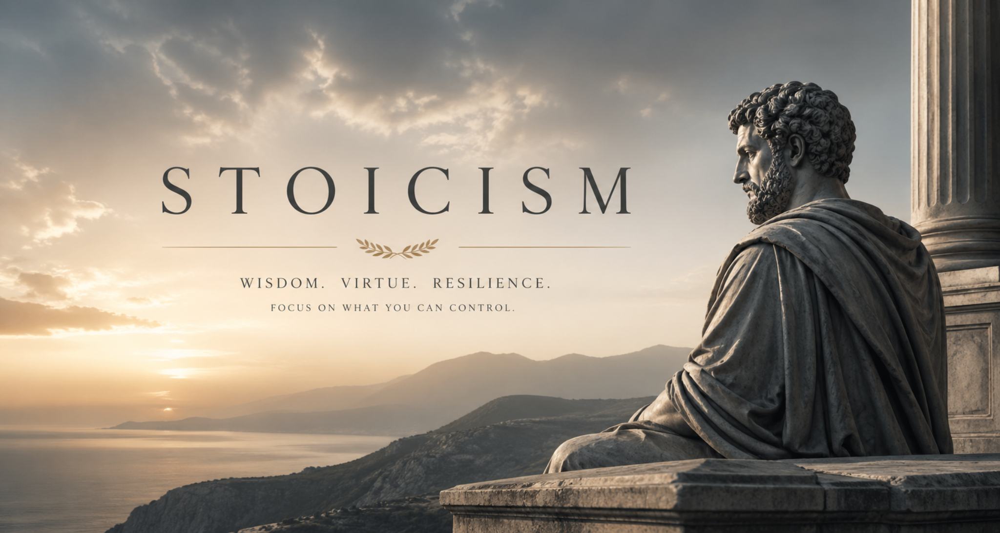
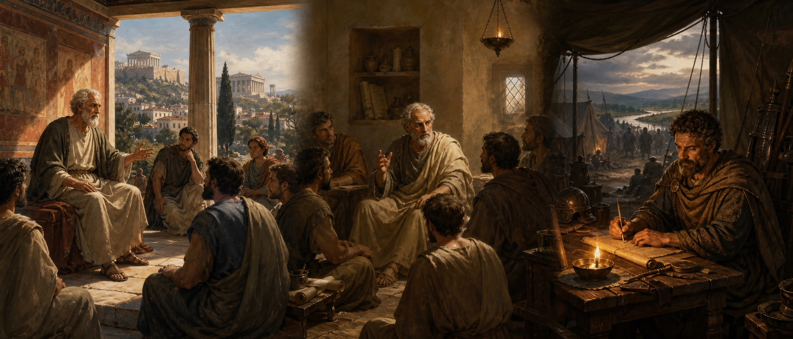
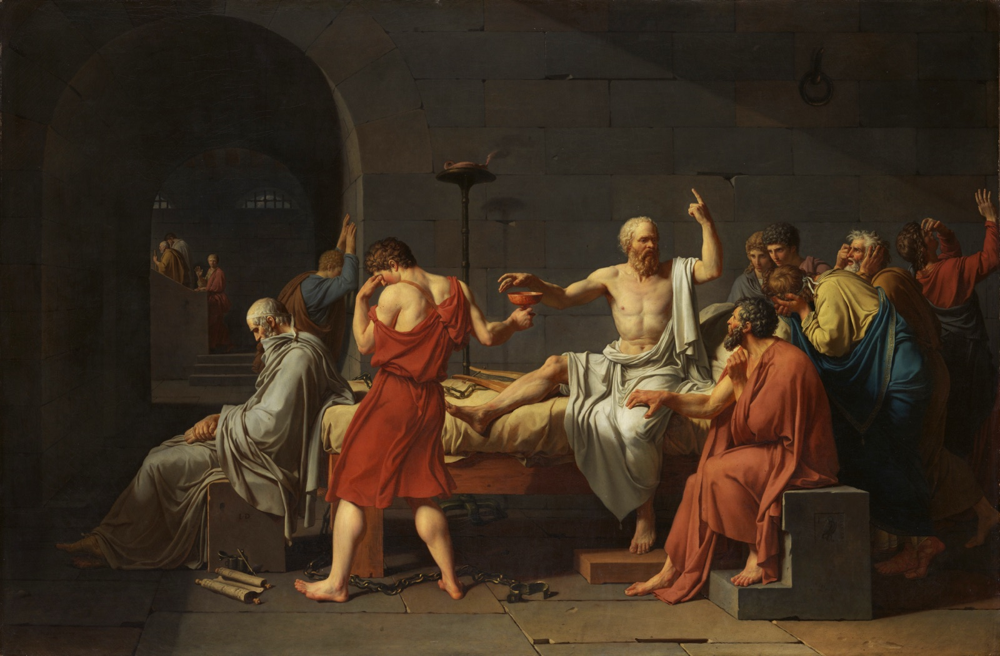
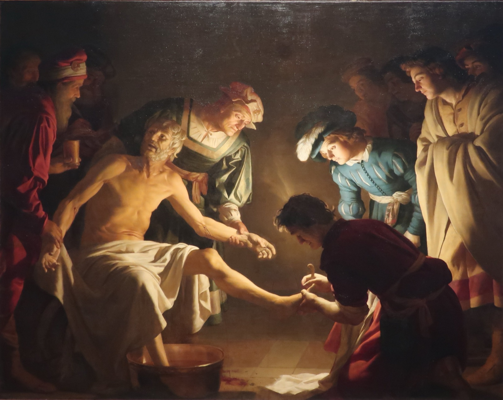
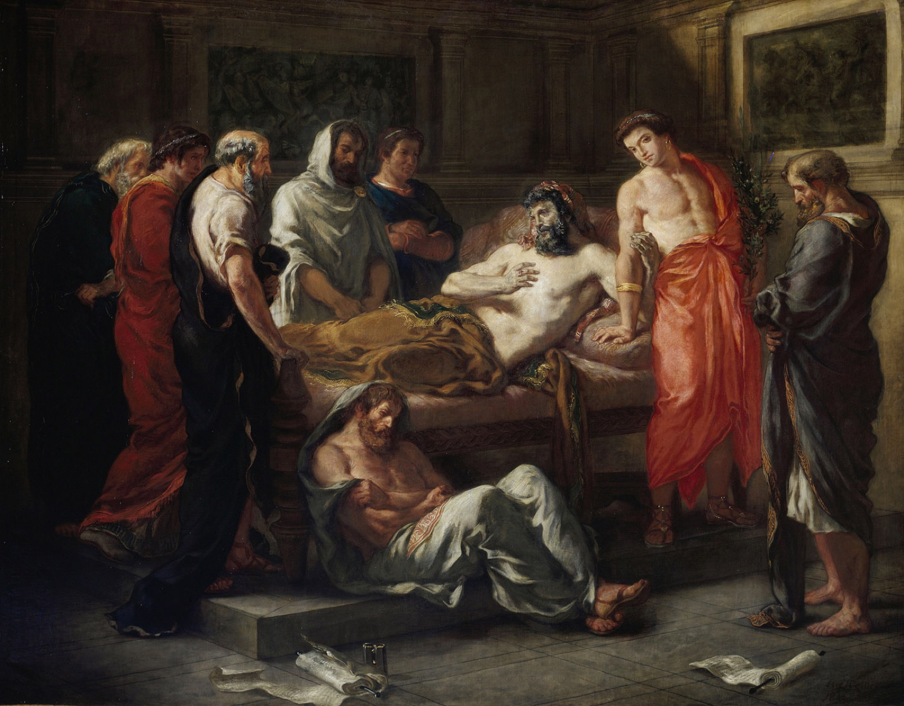
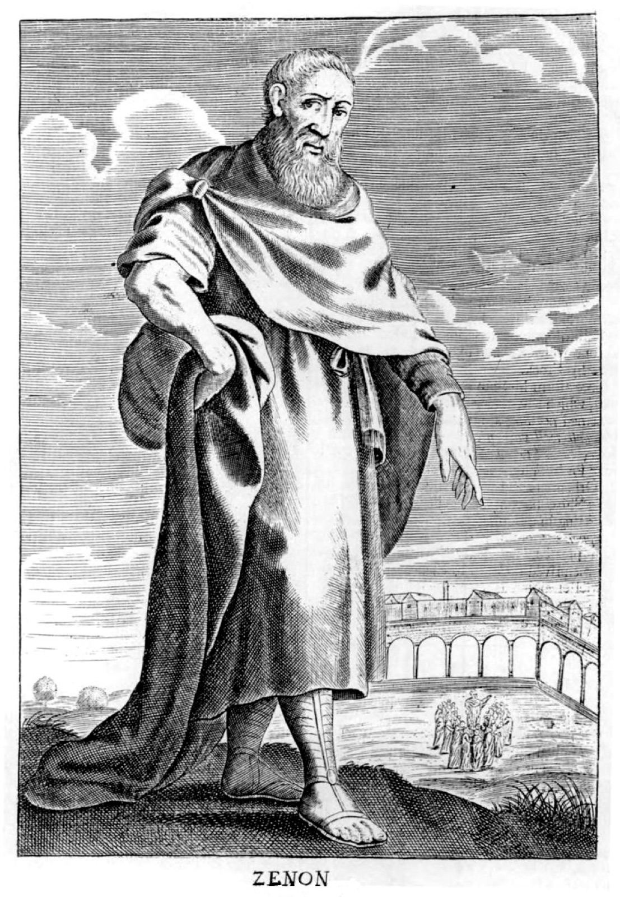
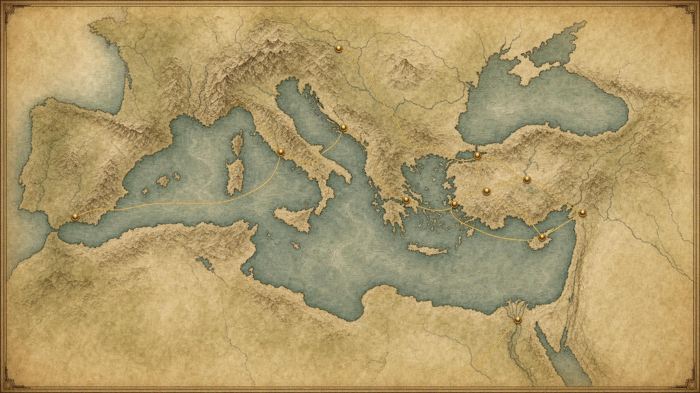

The Painted Porch
Zeno taught in a public colonnade called the Stoa Poikile. The school took its name from this ordinary gathering place rather than from its founder.

Learn it. Try it. Live it.

An interactive introduction to an ancient philosophy
Explore the thinkers, ideas, and practical exercises that make Stoicism a philosophy to use, not just study.
Follow a path or wander freely. Your progress is saved on this device.
Guided Learning
Follow a focused sequence through the best parts of the Explorium.
Take one honest minute. The aim is attention, not perfection.
Find a topic by interest instead of scrolling through the entire site.
Stoicism is an ancient Greek philosophy that teaches us to live in harmony with nature and reason, cultivating inner peace through self‑discipline and virtue. The early Stoics believed that the goal of life is to live in agreement with nature and that virtue is the only true good. Humans are unique in the animal kingdom because of our rationality, and it is through the proper use of reason that we achieve a flourishing life. Throughout Roman times, Stoicism inspired thinkers like Seneca, Epictetus and Emperor Marcus Aurelius.
Click to learn how Stoics saw Nature as a rational, ordered cosmos.
Click to learn why Stoics believed that virtue alone is sufficient for happiness.
Click to see how Stoics managed emotions and transformed passions.
Stoic ethics teaches that wisdom, justice, courage and moderation are unified virtues. To possess one fully is to embody them all.
Good sense, intelligence and practical reason.
Fairness, honesty and doing right by others.
Fortitude in adversity and facing fears.
Self‑control and moderation in all things.
A Philosophy on the Move
Stoicism changed as it travelled from Greek public debate into Roman classrooms, households, and political life.

Public-Domain Gallery
Centuries after the ancient Stoics lived, artists continued to imagine their composure, sacrifice, duty, and moral seriousness.

Socrates calmly reaches for the hemlock while continuing to teach. His example deeply shaped the Stoic ideal of choosing integrity over fear.

Seneca’s final hours became a recurring subject for artists exploring dignity under political tyranny.

The philosopher-emperor gives final counsel while Commodus turns away, contrasting responsibility with appetite.

This later engraving shows how the founder of Stoicism entered Europe’s visual history as a model of ancient wisdom.
All displayed reproductions are marked public domain by their source collections. Select a work for a larger view and source details.
Explore an interactive timeline of Stoicism’s founders and key figures.
Founder of Stoicism; taught on the Stoa Poikile in Athens and urged living according to nature.
Second head of the Stoic school; wrote the Hymn to Zeus and emphasised physics and ethics.
Systematised Stoic logic and ethics; wrote hundreds of books as the third head of the Stoa.
Middle Stoic leader who brought Stoicism to Rome and blended Platonic and Aristotelian ideas.
Polymath and student of Panaetius; travelled widely, taught in Rhodes and wrote on science and geography.
Roman statesman and Stoic author; wrote essays and letters advising self‑control and wise use of time.
Former slave turned philosopher; taught in Nicopolis that we control our judgments, not externals.
Philosopher‑emperor of Rome; wrote the Meditations while campaigning, reflecting on duty and virtue.
Below you’ll find randomly selected excerpts from Marcus Aurelius’ Meditations. Click the button to reveal another thought.
Put Stoic principles into practice with these interactive activities.
Test your knowledge with a multiple‑choice quiz.
Match Stoic concepts in a classic memory game.
Click on any scroll to reveal a nugget of wisdom from ancient Stoics.
Explore the geography of Stoicism—from the painted porch in Athens to the emperor’s camp.

Select a map label or place card to read its story.
Where it all began
Rise of Roman Stoics
Middle Stoa centre
Epictetus’ school
Meditations on the Danube
Birthplace of Zeno
Home of Athenodorus
Library & learning
Birthplace of Posidonius
Epictetus’ birthplace
Seneca’s origins
Hellenistic learning
Follow the clues below and type your answers to progress through the hunt. Each correct answer unlocks the next clue!
Clue 1: This Stoic taught that some things are within our control and others not. Type his name:
Choose a practice, write an honest response, and mark it complete. Reflections are saved only in this browser.
Unscramble the Stoic concepts below. Correct answers will unlock the next word!
Scrambled word 1: tueriv
Choose a situation, decide how you would respond, and see which Stoic principles your choice puts into practice.
Stoicism didn’t arise in a vacuum. It drew inspiration from earlier thinkers and continues to inspire people today. Explore these influences and legacies.
Click on each concept to learn its meaning in Stoic philosophy.
Explore these bite‑sized lessons to deepen your understanding of Stoic philosophy.